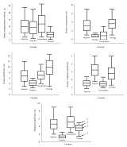
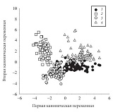
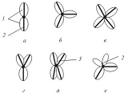

Страницы авторов "Тёмного леса"
Литературный Кисловодск и окрестности
Пишите нам! temnyjles@narod.ru
Число створок, которыми вскрываются коробочки, а также размеры, форма коробочек, длина плодоножек и особенности строения генеративных побегов позволяют четко очертить границы секций Populus и Turanga. Однако эти параметры практически непригодны для различения отдельных видов. Коробочки тополей секций Aigeiros и Tacamahaca вскрываются разным числом (двумя или тремя-четырьмя) створок. Использование этого признака в сочетании с другими признаками генеративной и вегетативной сферы может оказаться эффективным для установления видовой принадлежности отдельных растений и для определения их возможной гибридной природы. Однако при неполном вскрытии коробочек число створок не соответствует числу плодолистиков, и эту особенность тополей следует учитывать при проведении систематических исследований.
Ключевые слова: Populus, коробочки, створки, плодолистики, гибриды.
Внутриродовая систематика тополей строится прежде всего на признаках вегетативной сферы, связанных с характером листьев, черешков и коры, со способностью к формированию верхушечной почки, наличию или отсутствию укороченных побегов. Учитываются также размеры и форма почек, степень их смолистости, а также цвет и число почечных чешуй (Комаров, 1936; Соколов и др., 1951; Цвелев, 2001; Скворцов, 2008; Schneider, 1916; Rehder, 1949).
При описании таксонов в роде Populus L. принимаются во внимание также число тычинок, форма и надрезанность прицветных чешуй, длина мужских и женских соцветий во время цветения и плодоношения, длина плодоножек, форма, размеры и опушение коробочек, количество створок, которыми они раскрываются (Комаров, 1936; Schneider, 1916; Rehder, 1949). Однако это делается не всегда последовательно и не всеми исследователями. Такая недооценка признаков репродуктивной сферы обусловлена, по нашему мнению, краткосрочностью периода цветения и плодоношения тополей.
Секция Turanga. А.К. Скворцов (2010) признавал два вида - P. euphratica Olivier. (= P. diversifolia Dode, P. ariana Dode, P. litwinowiana Dode) и P. pruinosa Schrenk. Оба вида произрастают преимущественно в Средней Азии.
Секция Populus. Евроазиатские виды P. tremula L. (= P. villosa Lang, P. sieboldii Miq., P. davidiana Dode) и P. alba L. (= P. nivea (Ait.) Willd., P. bolleana Lauche,
P. hybrida Bieb., P. bachofenii Wierzb. ex Rochel, P. hyrcana Grossh.) мы понимаем в том же объеме, что и А.К. Скворцов (2010). Кроме того изучались признаки репродуктивной сферы у североамериканских видов - P. tremuloides Michx. и P. grandidentata Michx.
Секция Aigeiros. Виды этой секции произрастают в Северной Америке, а также в Европе и Азии. В Восточной Европе, Северной и Средней Азии встречаются два вида, которые мы понимаем в том же объеме, что и А.К. Скворцов (2008) - Populus nigra L. ( = P. italica (Du Roi) Moench, P. pyramidalis Rozier, P. dilatata Aiton, P. pannonica Kit,ex Bess, P. gracilis Grossh., P. afghanica (Aitch. et Hemsley) Schneider и P. usbekistanica Kom. ( = P. tadshikistanica Kom., P. cataractii Kom., P. tianschanica Tkaczenko).
Кроме того, мы изучали и североамериканские виды. P. deltoides Bartram ex Marshall. Систематические отношения этого вида с другими североамериканскими видами весьма неопределенны. Так, C.K. Schneider (1916) сближал P. deltoides с другим североамериканским видом - P. monilifera Ait. Populus fremontii Wats и P. wislizenii Sarg. он считал самостоятельными видами, обращая внимание на крупные коробочки (до 1,3 см длиной) и на длинную плодоножку у последнего.
Rehder (1949) и G. Krussmann (1977) P. monilifera Ait. за самостоятельный вид не признавали и приводили это название как синоним P. deltoides Marsh.
Populus wislizenii (S. Wats) Sarg. A. Rehder (1949), как и C.K. Schneider (1916), придавал статус самостоятельного вида, а Populus fremontii Wats. и P. arizonica Sarg. рассматривал как виды, близкородственные к P. wislizenii (S. Wats) Sarg. G. Krussmann (1977) приводит P. wislizenii S. Wats. и P. arizonica (Sarg.) Jeps. как разновидности P. fremontii S. Wats. Оба исследователя признают самостоятельность P. sargentii Dode.
Мы, вслед за J.E. Eckenwalder (1977), понимаем P. deltoides широко, рассматривая P. monilifera и P. wislizenii как подвиды P. deltoides.
P. fremontii S. Watson. Североамериканский вид, самостоятельность которого признавал J.E. Eckenwalder (1977).
Секция Tacamahaca. Виды этой секции, также как и предыдущей, произрастают в Северной Америке и Азии. Изучены три азиатских вида: P. suaveolens Fisch. ( = P. maximowiczii A. Henry., P. koreana Rehd., P. ussuriensis Kom., P. komarovii Ja. Vassil. ex Worosch, P. baicalensis Kom.), P. laurifolia Ledeb. ( = P. pilosa Rehder., P. amurensis Kom.) и P. macrocarpa (Schrenk) N. Pavl. et Lipsch. ( = P. talassica Kom., P. densa Kom., P. pamirica Kom.), которые мы понимаем в том же объеме, что и А.К. Скворцов (2010).
P. balsamifera L. Североамериканский вид, произрастающий в Канаде, на Аляске.
P. angustifolia James. Встречается на западе США.
P. trichocarpa Hock. Североамериканский вид, произрастающий от Аляски до южной Калифорнии.
P. tristis Fisch. (= P. longifolia Fisch., P. trichocarpa Torr. et Gray ex Hook, P. balsamifera ubp. trichocarpa Brayshaw). Происхождение этого вида не известно. Понимаем в том же объеме, как и А.К. Скворцов (2010).
P. simonii Carriere. Родом из Китая.
P. × canadensis Moench. Многие исследователи (Комаров, 1936; Соколов и др., 1951; Скворцов, 2006, 2008; Schneider, 1916; Rehder, 1949; Krussmann, 1977) считают P. × canadensis гибридом между P. nigra и P. deltoides.
P. × moskoviensis Schroeder, по мнению ряда исследователей (Комаров, 1936; Соколов и др., 1951; Цвелев, 2001; Скворцов, 2006, 2008), представляет собой гибрид P. suaveolens и P. laurifolia.
P. balsamifera L. × P. trichocarpa Hock. встречается в тех частях Северной Америки, где пересекаются ареалы родительских видов (Скворцов, 2008).
P. × acuminata Rydb. Гибрид P. angustifolia James. × P. trichocarpa Hock. встречается в Северной Америке в зоне пересечения ареалов.
P. × jackii Sarg. ( = P. candicans auctt. non Aiton, P. balsamifera var. candicans A. Gray). По мнению A.К. Скворцова (2010), гибрид P. balsamifera L. и P. deltoides Bartram ex Marsh.
P. × sibirica G. Kryl. et Grig. ex Skvortsov. По мнению А.К. Скворцова (2007, 2010), возник при гибридизации P. balsamifera и P. nigra.
P. × berolinensis K. Koch. Рассматривается как гибрид P. laurifolia и P. nigra var. italica (Комаров, 1936; Соколов и др., 1951; Цвелев, 2001, Скворцов, 2010; Rehder, 1949; Krussmann, 1977).
P. usbekistanica Kom. × P. macrocarpa (Schrenk) N. Pavl. et Lipsch. Гибрид образуется в природе в зоне пересечения ареалов (Скворцов, 2010).
P. acuminata Rydb. - гибрид между P. angustifolia James. и P. sargentii Dode. Встречается в зоне перекрытия ареалов родительских видов (Rehder, 1949).
Цель данного исследования состояла в выявлении особенностей строения генеративных побегов и коробочек у видов рода Populus и их значения для его систематики.
В работе были использованы гербарные материалы Главного ботанического сада им. Н.В. Цицина в Москве (MHA) и Ботанического института им. В.Л. Комарова РАН в С.-Петербурге (LE). Кроме того, в 2011-2012 гг. в Москве и Московской обл. во время плодоношения мы целенаправленно собирали гербарий с женскими генеративными побегами. Общее число изученных образцов видов разных секций по регионам приведено в табл. 1.
Определяли следующие признаки: длину генеративных побегов и плодоножек, длину и ширину коробочек, отношение длины к ширине коробочки и число створок, которыми раскрываются коробочки. Число измерений, проводившихся для каждого образца, варьировало в зависимости от сохранности генеративных органов. Для каждого образца фиксировали значение, приблизительно соответствующее модальному (единично встречавшиеся аномально большие и маленькие значения признаков не учитывали). Кроме того, отмечалось наличие или отсутствие листьев срединной формации в основании генеративных побегов.
Обработку данных проводили с помощью программы Statistica ver. 6.0 (StatSoft Inc., 2001). Для каждого вида, включая известные гибриды и культивары, и суммарно для секций (в данном случае гибриды и культивары были исключены из анализа) по каждому признаку рассчитывали среднее арифметическое значение, среднее квадратичное отклонение, минимальное и максимальное значения признака. Сравнение выборок и оценку достоверности различий проводили с помощью дисперсионного анализа с группировкой (nested design ANOVA). Вид и секция, к которым был отнесен каждый образец, использовались в качестве независимых факторов для каждого изученного количественного морфологического признака, причем фактор "вид" иерархически включался в фактор "секция". Дальнейшее сравнение средних значений признаков для каждого вида и секции проводили с помощью модифицированного теста Тьюки для неравных групп (unequal N HSD). Для оценки возможности использования изученных признаков генеративной сферы для разграничения подродов и секций был использован дискриминантный анализ по четырем количественным признакам: длине генеративных побегов, длине плодоножек, длине и ширине коробочек. Признак числа створок изучали только у образцов с полностью вскрывшимися коробочками.
Представителей секции Leucoides Spach мы не рассматривали из-за недостаточного объема доступных для изучения гербарных материалов. В понимании объема большинства видов мы следовали А.К. Скворцову (2008, 2010).
| Вид в узком смысле | Вид по А.К. Скворцову | Секция | Европа | Кавказ | Сибирь | Средняя Азия | Российский Дальний Восток | Китай и Япония | Северная Америка |
| Deltoides | deltoides | Aigeiros | 8 | - | - | - | - | - | 12 |
| Sargentii | deltoides | Aigeiros | - | - | - | - | - | - | 5 |
| Fremontii | fremontii | Aigeiros | - | - | - | - | - | - | 4 |
| Nigra | nigra | Aigeiros | 48 | 1 | - | - | - | 2 | - |
| Usbekistanica | usbekistanica | Aigeiros | - | - | - | 24 | - | - | - |
| Alba | alba | Populus | 8 | 12 | - | 11 | - | - | 1 |
| Grandidentata | grandidentata | Populus | - | - | - | - | - | - | 5 |
| Davidiana | tremula | Populus | - | - | - | - | - | 5 | - |
| Sieboldii | tremula | Populus | - | - | - | - | - | 6 | - |
| Trennda | tremula | Populus | 17 | - | 6 | - | - | - | - |
| Trenndoides | trenndoides | Populus | - | - | - | - | - | - | 7 |
| Angustifolia | angustifolia | Tacamahaca | - | - | - | - | - | - | 6 |
| Balsamifera | balsamifera | Tacamahaca | 5 | - | - | - | 17 | ||
| Balsamifera × Trichocarpa | balsamifera × trichocarpa | Tacamahaca | - | - | - | - | - | - | 15 |
| Laurifolia | laurifolia | Tacamahaca | - | - | 4 | 1 | 1 | 5 | - |
| Pilosa | laurifolia | Tacamahaca | - | - | - | 3 | - | 4 | - |
| Macrocarpa | macrocarpa | Tacamahaca | - | - | 9 | 13 | - | - | - |
| Moskoviensis | moskoviensis | Tacamahaca | 7 | - | - | - | - | - | - |
| Simonii | simonii | Tacamahaca | - | - | - | - | - | 19 | - |
| Komarovii | suaveolens | Tacamahaca | - | - | - | - | 4 | - | - |
| Koreana | suaveolens | Tacamahaca | - | - | - | - | 2 | - | - |
| Maxiniowiczii | suaveolens | Tacamahaca | - | - | - | - | 22 | 7 | - |
| Suaveolens | suaveolens | Tacamahaca | - | - | - | - | 7 | - | - |
| Ussuriensis | suaveolens | Tacamahaca | - | - | - | - | 2 | - | - |
| Trichocarpa | trichocarpa | Tacamahaca | - | - | - | - | - | - | 6 |
| Tristis | tristis | Tacamahaca | 4 | - | - | - | - | - | - |
| Jackii | × jackii | Tacamahaca × Aigeiros | 5 | 2 | - | 3 | - | - | - |
| × sibirica | × sibirica | Tacamahaca × Aigeiros | 8 | - | - | - | - | - | - |
| Ariana | euphratica | Turanga | - | - | - | 16 | - | - | - |
| Diversifolia | euphratica | Turanga | - | - | 5 | 11 | - | 3 | - |
| Euphratica | euphratica | Turanga | - | 1 | - | 43 | - | - | - |
| Pruinosa | pruinosa | Turanga | - | - | 8 | 20 | - | - | - |
для каждого вида, гибрида или культивара, а также суммарно для секций представлены в табл. 2. Дисперсионный анализ с группировкой для пяти использованных в нашем исследовании количественных признаков показал, что средние значения достоверно (p < 0,001) различаются как между секциями, так и между видами в пределах секций. Однако попарное сравнение средних значений для видов (тест Тьюки для неравных групп) показало, что такие различия наблюдаются не всегда. В пределах секций Populus и Turanga по изученным признакам достоверных (p < 0,05) различий между видами нами не обнаружено, а в секциях Aigeiros и Tacamahaca между видами могут быть достоверные различия, которые обсуждаются ниже. Тем не менее основная масса различий наблюдается между видами разных секций. Достоверность различий между секциями (без учета гибридов и культиваров) по результатам теста Тьюки показана в табл. 3. Как видно из таблицы, все секции различаются между собой по длине коробочки, по остальным признакам различия наблюдаются между всеми секциями, кроме одной пары в каждом случае. Различия между средними значениями признаков в секциях показаны на рис. 1. Из диаграмм видно, что средние значения в большинстве случаев достоверно различаются между секциями, хотя по абсолютным максимальным и минимальным значениям между ними наблюдается перекрывание.
Дискриминантный анализ по четырем количественным признакам (Wilks' Lambda: 0,0485) позволил правильно отнести образцы к соответствующим секциям в 89,6% случаев. Стандартизованные коэффициенты для канонических переменных приведены в табл. 4, из которой видно, что наибольший вклад в первую переменную вносят длина плодоножки и длина коробочки, а во вторую - индекс (длина/ширина) коробочки. Результаты канонического анализа представлены на рис. 2. Как видно из диаграммы разброса, секция Populus отделяется от других секций рода (Aigeiros, Tacamahaca и Turanga) наиболее четко (100% правильной классификации образцов). Наблюдается некоторое перекрывание между секциями Turanga и Aigeiros, но в большей степени перекрываются между собой секции Aigeiros и Tacamahaca.
Строение генеративных побегов. У всех представителей рода Populus генеративные побеги завершаются открытой брактеозной кистью, которая у женских растений может сильно вытягиваться в период плодоношения. Генеративные побеги тополей не принимают участия в построении многолетней осевой системы растения, поскольку у мужских растений они полностью опадают сразу после цветения, а у женских - после созревания семян.
При изучении гербарного материала было установлено, что у представителей секции Turanga на женских растениях в основании генеративных побегов могут образоваться от 1 до 4 листьев срединной формации, на что обращали внимание А.У Усманов (1971) и J.E. Eckenwalder (1977). Почки возобновления в пазухах таких листьев не формируются, и генеративные побеги полностью отмирают после цветения и плодоношения. Гербарные образцы с облиственными генеративными побегами составляют примерно 8% от всего числа гербарных листов, на которых представлены растения в цветущем и плодоносящем состояниях.
У тополей секции Turanga формируются и самые короткие генеративные побеги, которые только по максимальной длине перекрываются с другими секциями рода, что видно из рис. 1.
Размеры коробочек. У всех видов секции Populus формируются однотипные коробочки, самые короткие и узкие среди тополей (рис. 1).
| Вид по А.К. Скворцову | Секция | Длина генеративного побега | Длина плодоножки | ||||||||
| N | ср. | G | min | max | N | ср. | G | min | max | ||
| deltoides | Aigeiros | 25 | 12,92 | 3,39 | 7,00 | 21,00 | 25 | 4,22 | 1,23 | 1,50 | 7,00 |
| fremontii | Aigeiros | 4 | 9,50 | 0,58 | 9,00 | 10,00 | 4 | 3,75 | 0,50 | 3,00 | 4,00 |
| nigra | Aigeiros | 49 | 10,23 | 3,14 | 4,00 | 17,00 | 48 | 2,99 | 0,83 | 1,50 | 4,00 |
| usbekistanica | Aigeiros | 24 | 6,69 | 1,76 | 4,50 | 11,00 | 24 | 2,44 | 1,09 | 1,00 | 5,00 |
| Aigeiros | 102 | 10,03 | 3,59 | 4,00 | 21,00 | 101 | 3,19 | 1,18 | 1,00 | 7,00 | |
| alba | Populus | 32 | 9,16 | 2,53 | 5,00 | 14,00 | 32 | 0,67 | 0,24 | 0,50 | 1,00 |
| grandidentata | Populus | 3 | 12,67 | 5,03 | 8,00 | 18,00 | 5 | 0,80 | 0,45 | 0,50 | 1,50 |
| tremula | Populus | 33 | 9,85 | 4,14 | 4,00 | 20,00 | 33 | 0,97 | 0,25 | 0,50 | 1,50 |
| tremuloides | Populus | 7 | 6,07 | 2,52 | 3,00 | 10,00 | 7 | 0,57 | 0,19 | 0,50 | 1,00 |
| Populus | 75 | 9,31 | 3,59 | 3,00 | 20,00 | 77 | 0,80 | 0,30 | 0,50 | 1,50 | |
| angustifolia | Tacamahaca | 6 | 6,42 | 1,50 | 4,00 | 8,50 | 6 | 1,58 | 0,80 | 1,00 | 3,00 |
| balsamifera | Tacamahaca | 22 | 11,82 | 3,90 | 6,00 | 18,00 | 20 | 0,92 | 0,30 | 0,50 | 1,80 |
| laurifolia | Tacamahaca | 18 | 6,17 | 1,37 | 4,50 | 9,00 | 17 | 0,58 | 0,17 | 0,50 | 1,00 |
| macrocarpa | Tacamahaca | 22 | 9,11 | 2,84 | 4,00 | 14,00 | 21 | 0,71 | 0,62 | 0,50 | 3,00 |
| suaveolens | Tacamahaca | 42 | 15,24 | 4,41 | 7,00 | 23,00 | 44 | 0,86 | 1,35 | 0,50 | 9,00 |
| tristis | Tacamahaca | 4 | 14,75 | 0,96 | 14,00 | 16,00 | 4 | 0,50 | 0,00 | 0,50 | 0,50 |
| balsamifera × trichocarpa | Tacamahaca × | 15 | 16,00 | 2,24 | 13,00 | 20,00 | 15 | 0,50 | 0,00 | 0,50 | 0,50 |
| moskoviensis | Tacamahaca × | 7 | 15,29 | 0,95 | 14,00 | 16,00 | 7 | 0,50 | 0,00 | 0,50 | 0,50 |
| simonii | Tacamahaca × | 17 | 7,18 | 1,21 | 5,00 | 10,00 | 17 | 0,71 | 0,36 | 0,50 | 1,50 |
| trichocarpa | Tacamahaca × | 6 | 13,17 | 2,48 | 10,00 | 17,00 | 6 | 0,50 | 0,00 | 0,50 | 0,50 |
| xjackii | Tacamahaca × | 10 | 14,32 | 2,49 | 9,00 | 17,00 | 10 | 2,07 | 0,44 | 1,50 | 3,00 |
| × sibirica | Tacamahaca × | 8 | 14,50 | 3,28 | 8,50 | 19,00 | 8 | 1,06 | 0,18 | 1,00 | 1,50 |
| Tacamahaca | 116 | 11,46 | 4,90 | 4,00 | 23,00 | 114 | 0,82 | 0,93 | 0,50 | 9,00 | |
| euphratica | Turanga | 77 | 5,34 | 1,53 | 3,00 | 9,00 | 78 | 3,57 | 0,99 | 1,00 | 7,00 |
| pruinosa | Turanga | 28 | 5,04 | 1,51 | 2,50 | 10,00 | 28 | 3,77 | 1,12 | 1,00 | 5,50 |
| Turanga | 105 | 5,26 | 1,52 | 2,50 | 10,00 | 106 | 3,62 | 1,02 | 1,00 | 7,00 | |
| deltoides | Aigeiros | 25 | 8,92 | 1,29 | 6,00 | 11,00 | 25 | 5,74 | 1,19 | 4,00 | 9,00 |
| fremontii | Aigeiros | 4 | 11,00 | 0,82 | 10,00 | 12,00 | 4 | 6,15 | 0,60 | 5,60 | 7,00 |
| nigra | Aigeiros | 51 | 6,04 | 0,86 | 4,00 | 8,00 | 51 | 4,16 | 0,76 | 2,50 | 5,50 |
| usbekistanica | Aigeiros | 24 | 5,50 | 1,33 | 3,00 | 8,00 | 23 | 4,24 | 1,28 | 2,00 | 6,50 |
| Aigeiros | 104 | 6,80 | 1,90 | 3,00 | 12,00 | 103 | 4,64 | 1,23 | 2,00 | 9,00 | |
| alba | Populus | 32 | 4,27 | 0,96 | 2,50 | 6,00 | 31 | 1,35 | 0,35 | 1,00 | 2,00 |
| grandidentata | Populus | 5 | 4,80 | 1,10 | 4,00 | 6,00 | 5 | 1,90 | 0,55 | 1,50 | 2,50 |
| tremula | Populus | 34 | 4,35 | 0,74 | 3,00 | 6,00 | 33 | 1,36 | 0,35 | 1,00 | 2,00 |
| tremuloides | Populus | 7 | 3,64 | 0,94 | 3,00 | 5,00 | 7 | 1,29 | 0,49 | 1,00 | 2,00 |
| angustifolia | Tacamahaca | 6 | 5,13 | 0,92 | 4,00 | 6,00 | 6 | 2,87 | 0,25 | 2,50 | 3,10 |
| balsamifera | Tacamahaca | 22 | 7,11 | 1,18 | 5,50 | 10,00 | 22 | 4,30 | 0,78 | 3,50 | 6,50 |
| laurifolia | Tacamahaca | 18 | 7,24 | 1,00 | 6,00 | 9,00 | 18 | 5,82 | 1,18 | 4,50 | 8,00 |
| macrocarpa | Tacamahaca | 22 | 7,69 | 1,73 | 5,00 | 11,00 | 22 | 6,14 | 2,11 | 4,00 | 12,00 |
| suaveolens | Tacamahaca | 44 | 7,16 | 1,18 | 5,00 | 10,00 | 42 | 5,19 | 0,91 | 3,50 | 8,00 |
| tristis | Tacamahaca | 4 | 6,00 | 0,82 | 5,00 | 7,00 | 4 | 4,63 | 0,48 | 4,00 | 5,00 |
| balsamifera × trichocarpa | Tacamahaca × | 15 | 6,63 | 0,90 | 6,00 | 9,00 | 15 | 5,17 | 0,75 | 4,50 | 7,00 |
| moskoviensis | Tacamahaca × | 7 | 6,64 | 0,48 | 6,00 | 7,00 | 7 | 5,00 | 0,65 | 4,00 | 6,00 |
| simonii | Tacamahaca × | 19 | 5,16 | 0,60 | 4,00 | 6,00 | 19 | 2,71 | 0,44 | 2,00 | 3,50 |
| trichocarpa | Tacamahaca × | 6 | 5,67 | 0,52 | 5,00 | 6,00 | 6 | 4,42 | 0,49 | 4,00 | 5,00 |
| xjackii | Tacamahaca × | 10 | 4,93 | 0,56 | 4,10 | 6,00 | 10 | 3,16 | 0,55 | 2,10 | 4,00 |
| × sibirica | Tacamahaca × | 8 | 7,25 | 1,25 | 6,00 | 9,00 | 8 | 4,00 | 0,60 | 3,00 | 5,00 |
| Tacamahaca | 118 | 7,08 | 1,37 | 4,00 | 11,00 | 116 | 5,14 | 1,46 | 2,50 | 12,00 | |
| euphratica | Turanga | 79 | 10,20 | 2,29 | 3,00 | 14,50 | 78 | 3,73 | 0,65 | 2,00 | 5,00 |
| pruinosa | Turanga | 28 | 8,98 | 2,77 | 3,00 | 13,00 | 28 | 3,39 | 1,00 | 1,50 | 5,00 |
| Turanga | 107 | 9,88 | 2,47 | 3,00 | 14,50 | 106 | 3,64 | 0,77 | 1,50 | 5,00 | |
Наибольшей длины коробочки достигают у видов секции Turanga (рис. 1). Однако следует отметить, что в разных точках ареала P. euphratica и P. pruinosa встречаются растения с более плотными соцветиями из мелких и округлых коробочек. Такие растения составляют примерно 30% от числа изученных. На способность P. pruinosa формировать как крупные, так и мелкие коробочки обращали внимание П.П. Бессчетнов и Л.М. Грудзинская (1981), изучавшие внутривидовую изменчивость туранговых тополей в Казахстане.
Длина плодоножки. Коробочки у тополей могут быть как с отчетливо выраженной плодоножкой, так и практически сидячими.
Короткие плодоножки формируются у видов секции Populus. Длинные плодоножки характерны для секции Turanga. Хорошо выражены плодоножки и у видов секции Аigeiros (рис. 1).
Практически сидячие коробочки (длина плодоножки 0,5-1,0 мм) характерны для видов секции Tacamahaca P. suaveolens, P. laurifolia P. macrocarpa, P. trichocarpa. Однако у P. suaveolens попадаются коробочки с плодоножками длиной от 2 до 5 мм, хотя они составляют лишь 6% от всех изученных нами. На возможность формирования длинных плодоножек у этого вида указывали А.К. Скворцов и Н.Б. Белянина (2006). У других представителей секции Tacamahaca (P. balsamifera и P. angustifola) коробочки расположены на небольших, но отчетливо выраженных плодоножках.
Гинецей у тополей ценокарпный и может состоять из 2-4 плодолистиков. Число рылец может соответствовать числу плодолистиков, как, например, у тополя черного, а может не соответствовать. Например, у P. tremuloides формируются четыре рыльца, а гинецей состоит из двух плодолистиков.
Коробочки у тополей локулицидные, т.е. вскрываются по средней жилке плодолистиков (Комаров, 1936; Соколов и др., 1951; Schneider, 1916; Rehder, 1949). У нераскрывшихся коробочек эти жилки хорошо заметны с наружной стороны.
Обычно число створок, которыми вскрываются коробочки тополей, соответствует числу плодолистиков. В этом случае с внутренней стороны каждой створки хорошо заметен шов по линии срастания плодолистиков, идущий от основания створки к ее верхушке. Створка, таким образом, образована двумя половинками соседних плодолистиков (рис. 3, а-в).
Результаты исследования показали, что в некоторых случаях число створок, которыми вскрывается коробочка, может не соответствовать числу плодолистиков, принимавших участие в образовании завязи. Это обусловлено двумя причинами. Так, у тополей с двумя плодолистиками (например, у P. alba) вскрытие коробочки может начаться сначала по одной средней жилке, а только затем по второй. У видов с тремя-четырьмя плодолистиками (например, у P. euphratica) коробочки иногда начинают вскрываться сначала по двум жилкам (двумя створками), а затем еще по одной или двум (тремя и четырьмя створками соответственно) (рис. 3, г, д). Однако в некоторых случаях вскрытие по третьей или четвертой средней жилке может произойти не полностью. Тогда формируются двустворчатые коробочки, однако при рассмотрении таких коробочек изнутри видно, что в их образовании принимали участие не два, а большее число плодолистиков.
Вторая причина несоответствия числа створок числу плодолистиков обусловлена тем, что коробочки у тополей могут вскрываться не только по средней жилке плодолистика, но также и вдоль мест срастания плодолистиков друг с другом. В этом случае число створок, которыми вскрывается коробочка больше, чем число плодолистиков, как, например, иногда бывает у P. fremontii (рис. 3, е).
Наши наблюдения показали, что коробочки тополей вскрываются двумя или тремя створками. Иногда у видов с трехстворчатыми коробочками могут формироваться коробочки с четырьмя створками. Двустворчатые коробочки имеют все представители секции Populus; трех-, реже четырехстворчатые коробочки характерны для секции Turanga. В секциях Tacamahaca и Aigeiros могут быть виды с коробочками, вскрывающимися как двумя, так и тремя (реже четырьмя) створками (табл. 5).
| Секция | Aigeiros | Populus | Tacamahaca | Turanga | ||||||||||||
| 1 | 2 | 3 | 4 | 1 | 2 | 3 | 4 | 1 | 2 | 3 | 4 | 1 | 2 | 3 | 4 | |
| Aigeiros | 0,569 | 0,000 | 0,000 | 0,000 | 0,20 | 0,000 | 0,644 | 0,004 | 0,000 | 0,006 | 0,000 | 0,000 | ||||
| Populus | 0,569 | 0,000 | 0,000 | 0,000 | 0,000 | 0,998 | 0,000 | 0,000 | 0,000 | 0,000 | 0,000 | 0,000 | ||||
| Tacamahaca | 0,020 | 0,000 | 0,644 | 0,004 | 0,000 | 0,998 | 0,000 | 0,000 | 0,000 | 0,000 | 0,000 | 0,000 | ||||
| Turanga | 0,000 | 0,006 | 0,000 | 0,000 | 0,000 | 0,000 | 0,000 | 0,000 | 0,000 | 0,000 | 0,000 | 0,000 | ||||
Обозначения: 1 - длина генеративного побега; 2 - длина плодоножки; 3 - длина коробочки; 4 - ширина коробочки.
| Признак | Переменная | |
| 1 | 2 | |
| Длина генерированного побега | -0,430087 | -0,311272 |
| Длина плодоножки | 0,796852 | 0,268593 |
| Длина коробочки | 0,451156 | -0,414481 |
| Длина/ширина коробочки | -0,334707 | 0,981041 |
|  | Рис. 1. Различия между секциями тополей по признакам генеративных побегов и плодов. Обозначения на диаграммах: 1 - среднее арифметическое значение признака; 2 - среднее квадратическое отклонение; 3 - максимальное и минимальное значение признака без учета выбросов |
| Секция | Вид | Литературный источник | Число створок (литературные данные) | Число створок (наши данные) |
| Виды, имеющие естественные ареалы | ||||
| Populus | P. tremula | Rehder,1949; Eckenwalder, 1977; Поляков, 1960 | 2 | 2 |
| P. alba | там же | 2 | 2 | |
| P. tremuloides | там же | 2 | 2 | |
| P. grandidentata | Schneider,1916; Rehder, 1949; Eckenwalder, 1977 | 2 | 2 | |
| Turanga | P. euphratica | Schneider,1916; Koltzenburg, 1999 | 3, реже 2 | 3, реже 4 |
| Комаров 1936; Соколов и др., 1951; Eckenwalder, 1977 | 3 | |||
| Бессчетнов, Грудзинская, 1981 | 3-4, реже 2 | |||
| Поляков, 1960 | 2 | |||
| P. pruinosa | Eckenwalder,1977 | 3 | 3, реже 4 | |
| Aigeiros | P. nigra | Schneider, 1916; Rehder, 1949; Поляков, 1960; Krussmann, 1977; Koltzenburg, 1999; Скворцов, 2006; Цвелев, 2001; Бакулин, 2007 | 2 | 2 |
| P. usbekistanica | Поляков, 1972 Schneider, 1916 Rehder, 1949; Krussmann, 1977 | 2 | 2 | |
| P. deltoides | 3, реже 2 | 3-4 | ||
| 3, реже 4 | ||||
| Koltzenburg, 1999; Комаров, 1936; Соколов и др., 1951 | 2-4 | |||
| Lundel, 1961; Eckenwalder,1977; Цвелев, 2001 | 3-4 | |||
| P. fremontii | Koltzenburg, 1999 | 3-4 | 3-4 | |
| Eckenwalder,1977 | 3-4 | |||
| Tacamahaca | P. suaveolens | Rehder, 1949; Соколов и др., 1951; Krussmann, 1977, Бакулин, 2010 | 3-4 | 3, реже 4 |
| Комаров, 1936; Koltzenburg, 1999 | 3 | |||
| Коропачинский и др., 2007 | обычно 3 | |||
| Скворцов, Белянина, 2006 | обычно 3, реже 2 или 4 | |||
| P. laurifolia | Rehder, 1949; Krussmann, 1977 | 2-3 | 3, реже 4 | |
| Бакулин, 2004 | 3, реже 2 | |||
| Поляков, 1960, 1972; Koltzenburg, 1999 | 3 | |||
| Коропачинский и др., 2007 | обычно 3 | |||
| P. macrocarpa | Поляков, 1972 | 3 | 3, реже 4 | |
| P. trichocarpa | Schneider,1916; Rehder, 1949; Krussmann, 1977; Eckenwalder, 1977 | 3 | 3-4 | |
| Koltzenburg, 1999 | 3-4 | |||
| P. balsamifera | Schneider,1916; Rehder, 1949; Krussmann, 1977; Eckenwalder, 1977; Koltzenburg, 1999; Скворцов 2006 | 2 | 2 | |
| P. angustifolia | Schneider,1916; Rehder, 1949; Lundel, 1961; Krussmann, 1977; Eckenwalder, 1977; Koltzenburg, 1999 | 2 | ||
| Виды с неопределенным статусом | ||||
| Tacamahaca | P. tristis | Данные отсутствуют | 2-3 | |
| P. simonii | Комаров, 1936 | обычно 2 | 2 | |
| Rehder, 1949; Соколов и др., 1951 | 2, реже 3 | |||
| Внутрисекционные гибриды | ||||
| Aigeiros | P. × canadensis | Eckenwalder, 1977 | 2-4 | 2-4 |
| Koltzenburg, 1999 | 2-3 | |||
| Tacamahaca | P. balsamifera × P. trichocarpa | данные отсутствуют | 2-4 | |
| P. × acuminata | Rehder, 1949; Lundel, 1961: Krussmann; 1977 | 2-3 | 2-3 | |
| P. × moskoviensis | данные отсутствуют | 3 | ||
| Межсекционные гибриды | ||||
| Tacamahaca × Aigeiros | P. × sibirica | Скворцов, 2007 | 2 | 2-3 |
| P. usbekistanica × P. macrocarpa | данные отсутствуют | |||
| P. × jackii | Schneider, 1916; Комаров, 1936; Rehder, 1949; Скворцов, 2006 | 2 | 2 | |
| P. × berolinensis | данные отсутствуют | |||
Результаты исследования показали, что большинство гибридов, родительские виды которых имеют коробочки, вскрывающиеся разным числом створок, такие как P. × canadensis, P. balsamifera × P. trichocarpa, P. usbekistanica × P. macrocarpa, P. × acuminata, нередко в пределах даже одной кисти имеют разнообразно вскрывающиеся коробочки. При этом в одних случаях могут преобладать двухстворчатые, а в других - трех- или четырехстворчатые коробочки.
Исключение представляет P. × jackii. Этот культивар, по мнению большинства исследователей, произошел от P. deltoides, коробочки которого вскрываются тремя створками, и P. balsamifera, имеющего двустворчатые коробочки. Однако коробочки у P. × jackii только двустворчатые, мелкие, как бы недоразвитые, на хорошо выраженной плодоножке. Образцы P. × jackii из Ташкента, Литвы, Брянской, Калужской и Московской областей (Каширский р-н, г. Зеленоград) с такими мелкими коробочками имеются в гербарии МНА.
У гибридов, предполагаемые родительские виды которых имеют коробочки, вскрывающиеся однотипно, ситуация складывается следующим образом. У P. × moskoviensis, представляющего собой гибрид видов с трехстворчатыми коробочками (P. suaveolens и P. laurifolia), коробочки также имеют три створки. А вот коробочки P. × sibirica, родительские виды которого (P. nigra и P. balsamifera) имеют двухстворчатые коробочки, по нашим данным, могут вскрываться как двумя, так и тремя створками, причем доля трехстворчатых коробочек у разных деревьев варьирует от 0 до 78%
|  | Рис. 2. Результаты дискриминантного анализа секций рода Populus по четырем количественным признакам генеративной сферы (1 - Aigeiros, 2 - Populus, 3 - Tacamahaca, 4 - Turanga) |
Проведенное исследование показало, что в отличие от ив, среди которых многие виды имеют генеративные побеги с листьями срединной формации в основании, у большинства тополей формируются необлиственные генеративные побеги. Регулярно небольшие листья в основании генеративных побегов развиваются только у женских растений из секции Turanga, так что этот признак следует включить в диагноз секции.
Интересно отметить, что формирование облиственных генеративных побегов в природе мы наблюдали и у P. tremula. Но образование таких побегов у этого вида происходит крайне редко, о чем свидетельствует и просмотренный нами гербарный материал. Поэтому облиственные генеративные побеги у P. tremula можно рассматривать как отклонение от нормы, не выходящее за рамки изменчивости семейства ивовых.
|  | Рис. 3. Особенности вскрывания коробочек тополей: 1 - створки коробочек, 2 - шов, по которому срастаются плодолистики; 3 - средняя жилка плодолистика (а-е см. в тексте) |
Результаты анализа литературных источников показывают, что для видов, коробочки которых вскрываются двумя створками, между исследователями обычно не возникает разногласий в определении их числа. А для видов с трех-, реже четырехстворчатыми коробочками нередко указывается возможность вскрытия коробочек еще и двумя створками, как для P. euphratica, P. laurifolia, P. suaveolens, P. deltoides, что, по всей видимости, может быть обусловлено описанными выше особенностями вскрытия коробочек тополей, при котором число плодолистиков не соответствует числу створок. Такая неопределенность смазывает картину как распределения по этому признаку видов по секциям, так и различия между самими видами. Полученные нами результаты свидетельствуют о том, что и число плодолистиков, и, как правило, число створок, которыми вскрываются коробочки, достаточно четко выдерживаются для каждого вида, это соответствует данным E. Eckenwalder (1977). Хотя, конечно, нельзя полностью отрицать возможность появления коробочек, в образовании которых принимало участие несвойственное для данного вида число плодолистиков.
Результаты морфометрического исследования, а также анализ распределения по секциям таких признаков, как число створок, которыми вскрываются коробочки, и наличие или отсутствие листьев срединной формации в основании генеративных побегов, подтверждают точку зрения В.Л. Комарова (1936), С.Я. Соколова и др. (1951) о придании секциям Populus и Turanga ранга подродов и об объединении секций Aigeiros и Tacamahaca в один подрод.
Изученные нами признаки строения генеративных побегов и коробочек позволяют четко очертить границы секций Populus и Turanga, однако практически непригодны для различения отдельных видов в их пределах. В секциях Aigeiros и Tacamahaca есть виды, коробочки которых вскрываются разным числом (двумя или тремя) створок. Использование этого признака в сочетании с другими признаками генеративной и вегетативной сфер может оказаться эффективным для установления видовой принадлежности отдельных растений и для определения их возможной гибридной природы.
В секции Aigeiros виды с двухстворчатыми коробочками распространены в Европе и Азии, а виды с трехстворчатыми - в Северной Америке.
В секции Tacamahaca трехстворчатые, округлые и практически сидячие коробочки имеют три азиатских вида (P. suaveolens, P. laurifolia, P. macrocarpa) и один североамериканский (P. trichocarpa). Коробочки P. laurifolia и P. trichocarpa могут быть в разной степени опушенными. У двух других североамериканских видов (P. balsamifera и P. angustifolia) двухстворчатые коробочки располагаются на небольшой, но отчетливо выраженной плодоножке.
Такой признак, как число створок, которыми вскрываются коробочки у изучаемого образца, может быть использован при разграничении видов и гибридов. Так, наличие у образца коробочек с двумя, тремя и четырьмя створками может свидетельствовать о его гибридогенной природе. Однако нельзя исключить вероятность того, что при доминировании по этому признаку одного из родительских видов коробочки гибридов могут вскрываться однотипно. Вероятно, таким образом можно объяснить наличие двухстворчатых коробочек у P. × jackii.
Формирование коробочек, вскрывающихся разным числом створок, у гибрида, предполагаемые родительские виды которого имеют однотипно вскрывающиеся коробочки, может свидетельствовать о том, что родительские виды установлены неправильно. Такая ситуация складывается в настоящее время с P. × sibirica.
Бакулин В.Т. Тополь лавролистный. Новосибирск, 2004. 123 с.
Бакулин В.Т. Тополь черный в Западной Сибири. Новосибирск, 2007. 121 с.
Бакулин В.Т. Тополь душистый в Сибири. Новосибирск, 2010. 110 с.
Бессчетнов П.П., Грудзинская Л.М. Туранговые тополя Казахстана. Алма-Ата, 1981. 152 с.
Комаров В.Л. Род Тополь // Флора СССР М.Л., 1936. Т. 5. С. 215-242.
Коропачинский И.Ю., Артемов И.А. Определитель растений республики Тыва. Новосибирск, 2007. С. 227-228.
Поляков П.П. Флора Казахстана. Алма-Ата, 1960. С. 38-52.
Поляков П.П. Род - Populus L. Иллюстрированный определитель растений Казахстана. Алма-Ата, 1972. С. 484-486.
Скворцов А.К., Белянина Н.Б. О бальзамических тополях (Populus section Tacamahaca, Salicaceae) на востоке азиатской России // Бот. журн. 2006. Т. 91. N1. С.1244-1252.
Скворцов А.К. Populus L. - Тополь // П.Ф. Маевский. Флора средней полосы европейской части СССР. М., 2006. С. 179-181.
Скворцов А.К. О сибирском бальзамическом тополе // Бюл. ГБС. 2007. N193. С. 41-45.
Скворцов А.К. О некоторых тополях, описанных Ф.Б. Фишером в 1841 г. // Бюл. ГБС. 2008. N194. С. 61-67.
Скворцов А.К. Систематический конспект рода Populus в Восточной Европе, Северной и Средней Азии // Бюл. ГБС. 2010. Вып. 196. С. 62-73.
Соколов С.Я., Шипчинский Н.В., Ярмоленко А.В. Populus L. - Тополь // Деревья и кустарники СССР. М.;Л., 1951. Т. 2. С. 174-217.
Усманов А.У. Тополь. Дендрология Узбекистана. Ташкент, 1971. Т. 3. 263 с.
Цвелев Н.Н. О тополях Санкт-Петербурга и Ленинградской области // Бот. журн. 2001. Т. 86. N2. С. 70-78.
Eckenwalder J.E. North American cottonwoods (Populus, Salicaceae) of section Abaso and Aigeiros // J. Arnold Arbor. 1977. Vol. 58. N3. P. 193-208.
Koltzenburg M. Bestimmungsschlussel fur in Mitteleuropa heimische und kultivierte Pappelarten undsorten (Populus sp.) / Floristische Rundbriefe. Beih. 6. 1999. 53 S.
Krussmann G. Handbuch der Laubgeholze. Berlin, Hamburg, 1977. Bd 2. 451-466 s.
Lundell C.L. Flora of Texas. Renner, Texas. 1961. Part VI. Vol. 3. P. 393-407.
Rehder A. Manual of cultivated trees and shrubs hardy in North America. N.Y., 1949. 996 p.
Schneider C.K. Populus // Sargent Ch.S. Plantae Wilsonianae. 1916. Vol. 3. N1. P. 16-39.
StatSoft, Inc. (2001). STATISTICA (data analysis software system), version 6. www.statsoft.com
Поступила в редакцию 29.04.13
The limits of Populus and Turanga sections of the genus Populus can be characterized by the number of capsule valves, shape and dimensions of capsules, pedicel length and generative shoot structure. These characters, however, are nearly useless for species delimitation within these sections. Capsules of poplars of Aigeiros and Tacamahaca sections open with different (two or 3-4) number of valves. This character in combination with other generative and vegetative characters may be used for species identification and assessment of hybrid nature of separate plants. However, in half-opened capsules the number of valves may deviate from the real number of locules. This fact should be taken into consuderation in taxonomic studies.
Key words: Populus, capsules, valves, locules, hybrids.
Сведения об авторах:
Костина Марина Викторовна - профессор кафедры биологии и биотехнологии факультета экологии и естественных наук Московского государственного университета им. М.А. Шолохова, докт. биол. наук
mkostina@list.ru;
Шанцер Иван Алексеевич - ст. науч. сотр. Лаборатории Гербарий Главного ботанического сада им. Н.В. Цицина РАН, докт. биол. наук
ischanzer@mail.ru
Главная страница сайта
Страницы Юрия Насимовича
Книги и статьи Юрия Насимовича по естественнонаучному краеведению
Статьи Юрия Насимовича о биологическом значении окраски цветка
Последнее изменение страницы 17 Jan 2023
{kind=link}
{kind=link}
{kind=link}